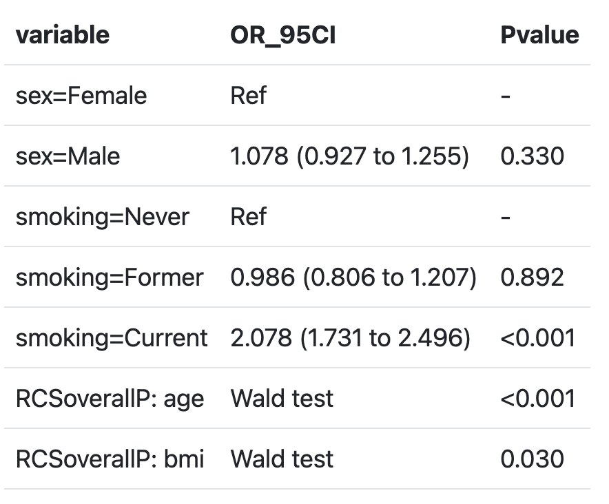
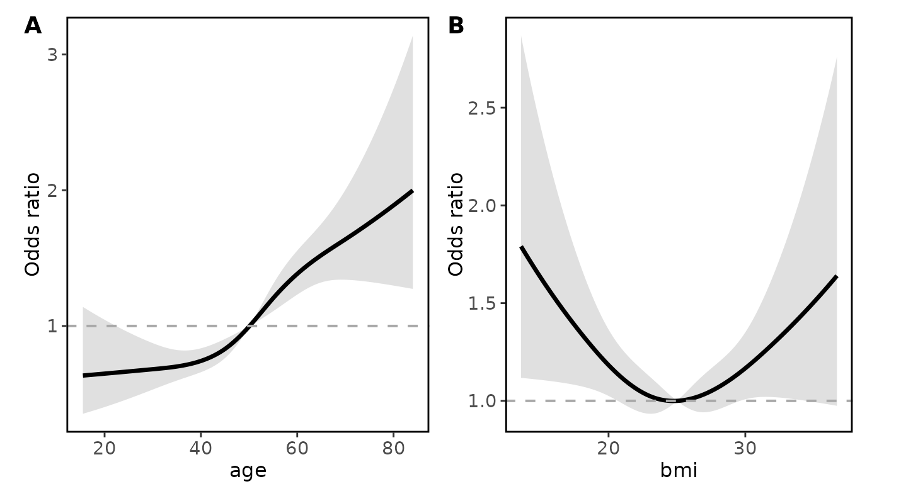
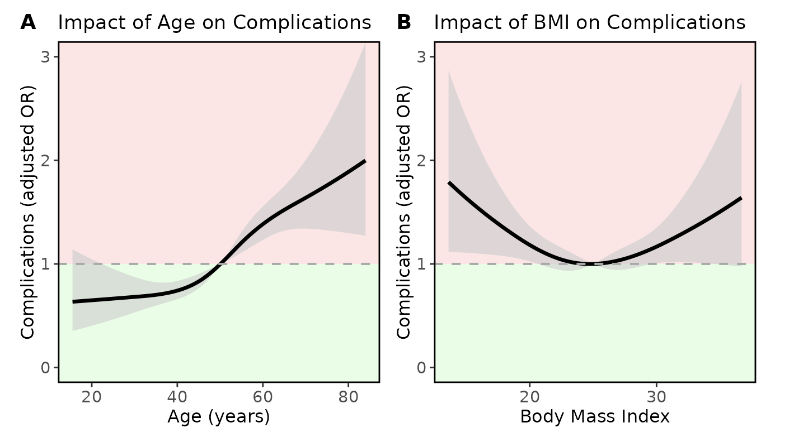

rmsMD provides streamlined functions for summarising and visualising regression models fitted with the rms package, in the preferred format for medical journal reporting.
It includes support for linear, logistic, and Cox models, handles restricted cubic splines (RCS) automatically, and produces publication-ready tables and plots.
Installation
You can install rmsMD from CRAN:
install.packages("rmsMD")It is recommended that this package is used alognside rms, which can be installed via:
install.packages("rms")Quick start
Fit regression models and create clean outputs
Fit a logistic regression model with restricted cubic splines for age and BMI.
Generate a publication-ready summary table from the fitted model.
library(rmsMD)
library(rms)
# Fit an OLS model including a restricted cubic spline
# for Age and BMI (with 4 knots)
fit_lrm <- lrm(majorcomplication ~ rcs(age,4) +
rcs(bmi,4) +
sex +
smoking,
data = data)
# Generate a publication-ready summary table
modelsummary_rms(fit_lrm)
Building basic plots
Create basic plots of the model’s restricted cubic spline terms to visualize adjusted effects.
# Most basic output
ggrmsMD(fit_lrm, data)
Plot customisation
Customize axis labels, plot titles, and shading to highlight inferior outcomes visually.
# x axis labels can be stored in a list
xlabels <- list ("age" = "Age (years)",
"bmi" = "Body Mass Index")
# titles for each variable can be stored in a list
titles <- list ("age" = "Impact of Age on Complications",
"bmi" = "Impact of BMI on Complications")
ggrmsMD(fit_lrm, data,
# set y axis label for all plots
ylab = "Complications (adjusted OR)",
# set y axis limits
ylim = c(0,3),
# set higher OR as inferior outcome to assign red shading
shade_inferior = "higher",
# set x axis labels for each variable
xlabs = xlabels,
# set titles for each variable
titles = titles
)
Learn more
See the Standard workflow with restricted cubic splines vignette for a full worked example.